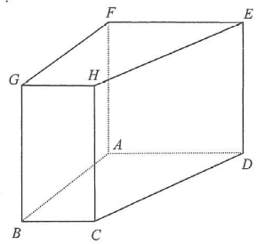

[2012 #9] In Figure 2, the volume of the solid right prism ABCDEFGH is $1020\text{ cm}^3$. The base $ABCD$ of the prism is a trapezium, where $AD$ is parallel to $BC$. It is given that $\angle BAD = 90^\circ$, $AB = 12\text{ cm}$, $BC = 6\text{ cm}$ and $DE = 10\text{ cm}$.
Find
(a) the length of $AD$,
(b) the total surface area of the prism $ABCDEFGH$.

The prism stands on the trapezium $ABCD$ with $AD \parallel BC$ and $\angle BAD = 90^\circ$. The parallel sides of the base are therefore $AD$ and $BC = 6$ cm, and the distance between them is $AB = 12$ cm.
The prism is right, so every lateral edge is perpendicular to the base and all lateral edges are equal: $DE = 10$ cm is the prism height.
Volume of a prism $=$ (base area) $\times$ height.
Base ABCD is a trapezium with parallel sides $AD=x$ and $BC=6$, height $AB=12$:
$$\text{Area of }ABCD=\frac{(x+6)(12)}{2}$$Volume of prism $=$ base area $\times DE$:
$$\frac{(x+6)(12)}{2}\times 10 = 1020$$ $$6(x+6)\times 10 = 1020 \;\Rightarrow\; 60(x+6)=1020$$ $$x+6=17 \;\Rightarrow\; x=11$$Draw $C$ dropped vertically to meet $AD$; the horizontal difference is $AD - BC = 11 - 6 = 5$ cm and the vertical difference is $AB = 12$ cm. By Pythagoras:
$$CD=\sqrt{12^{2}+(11-6)^{2}}=\sqrt{144+25}=\sqrt{169}=13\text{ cm}$$Perimeter of the base $ABCD$:
$$12+11+13+6=42\text{ cm}$$Lateral surface area $=$ perimeter $\times$ prism height:
$$42\times 10 = 420\text{ cm}^2$$Two identical trapezoidal ends:
$$2\times\frac{(6+11)(12)}{2}=132\text{ cm}^2$$Total surface area:
$$(12+11+13+6)(10)+2\times\frac{(6+11)(12)}{2}$$ $$=420+132=624\text{ cm}^2$$Base area $=\frac{(11+6)(12)}{2}=102$ cm², times height $10$ gives $1020\text{ cm}^3$ ✓ (matches the given volume).
All four lateral faces are rectangles: $AB\cdot10=120$, $BC\cdot10=60$, $CD\cdot10=130$, $AD\cdot10=110$, sum $=420$ cm² ✓.
Question. \(ABCDEF\) is a right prism whose base \(ABCD\) is a trapezium with \(AD\parallel BC\), \(\angle BAD=90^{\circ}\), \(BC=8\text{ cm}\) and \(AB=9\text{ cm}\). The height of the prism is \(12\text{ cm}\) and its volume is \(1512\text{ cm}^{3}\). (a) Find \(AD\). (b) Find \(CD\) and the total surface area of the prism.